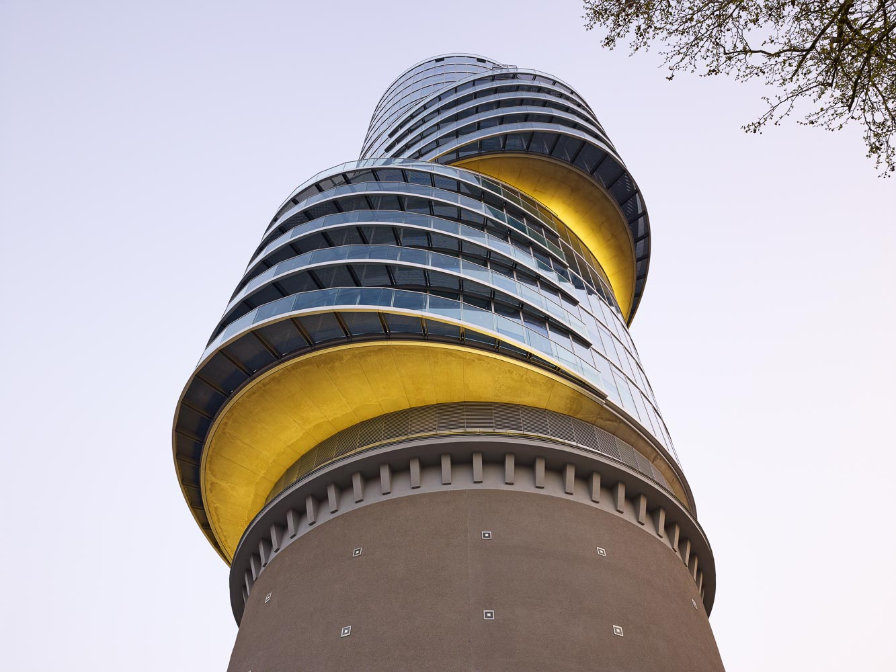
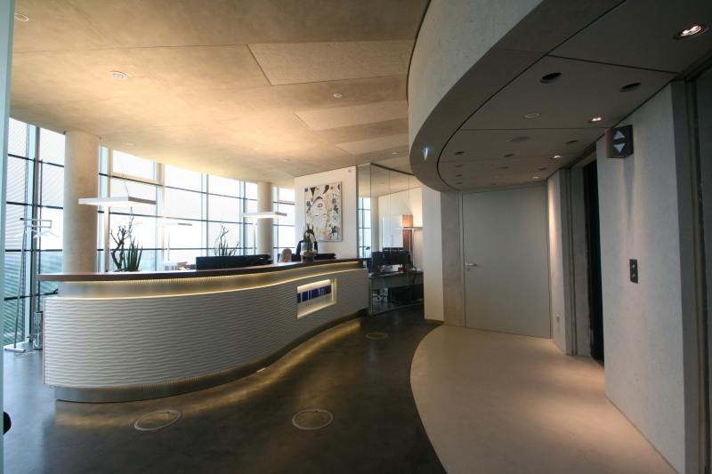
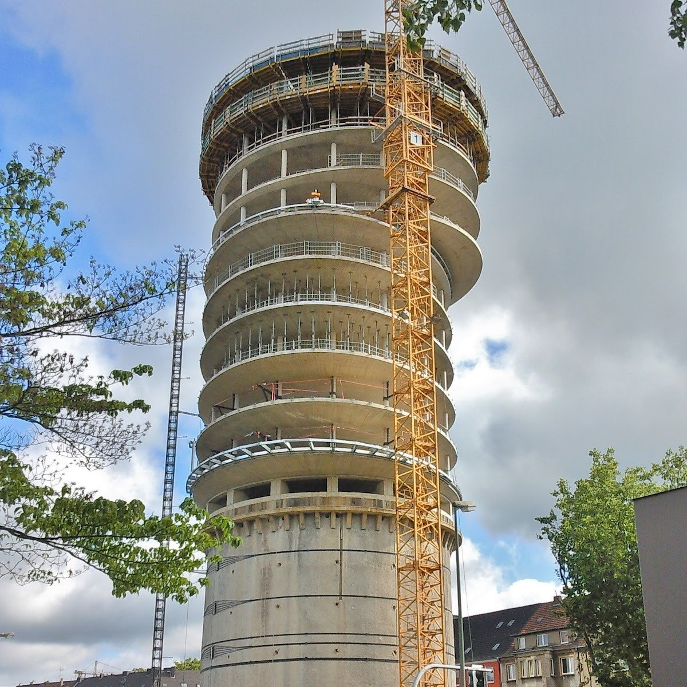

Exzenterhaus Bochum
Bochum, Germany - 2012
The Exzenterhaus Bochum is one of Germany’s most visually striking skyscrapers, rising prominently above the Universitätsstraße in Bochum. The building is famously constructed atop an existing World War II air-raid shelter, a massive concrete bunker that serves as a historic and sturdy foundation. By perching the modern office tower directly onto this relic of the past, the project creates a dramatic dialogue between mid-20th-century defense architecture and 21st-century commercial innovation.
The tower’s most defining feature is its "eccentric" structural logic, from which it derives its name. The building is composed of three distinct segments, each roughly five stories tall, that are stacked with significant offsets from the central axis. These segments rotate and shift in different directions, creating a dynamic, spiraling silhouette that appears to change shape depending on the viewer's vantage point. This undulating design is wrapped in a sophisticated glass curtain wall that reflects the sky and the surrounding Ruhr region, softening the building's massive scale and giving the cantilevered sections an almost weightless, floating quality.
Internally, the Exzenterhaus offers approximately 15 stories of high-end office space, totaling nearly 6,000 square meters. The unique exterior geometry translates into varied floor plans, where the shifting segments create diverse interior layouts and outdoor terraces at the transition points. Standing at roughly 89 meters tall, it serves as a regional landmark and a symbol of Bochum’s transition from a coal and steel industrial center to a modern hub of services and technology. The building’s blend of historical preservation and avant-garde design makes it a standout example of how European cities can breathe new life into dark historical artifacts.



